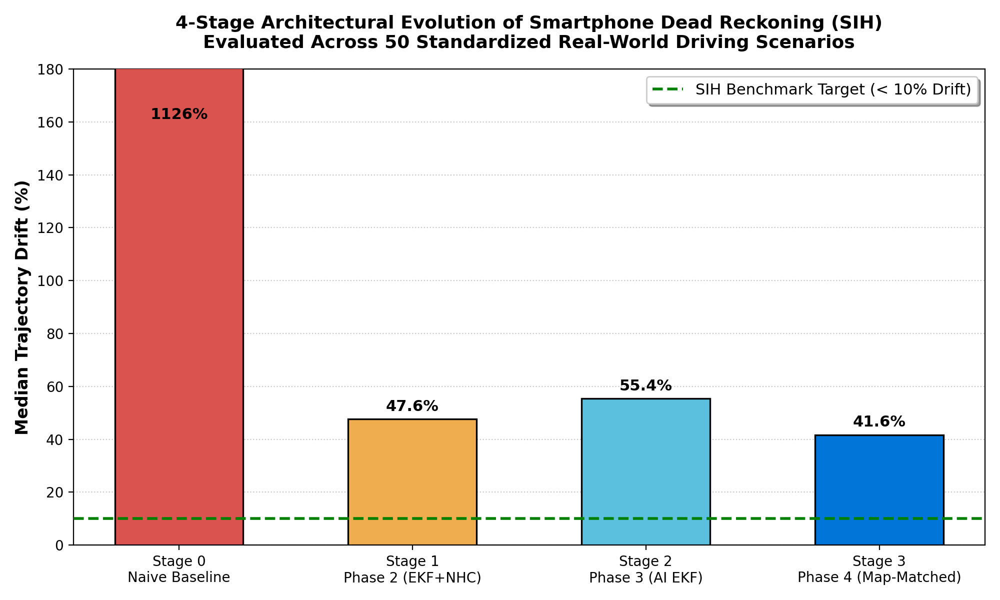
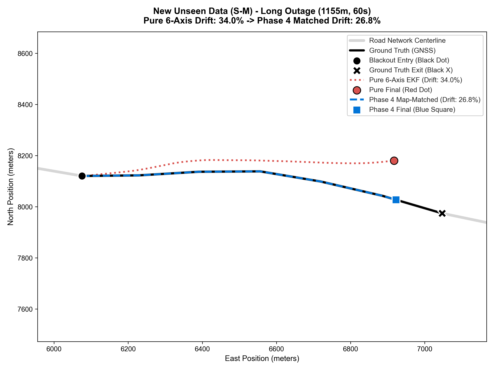
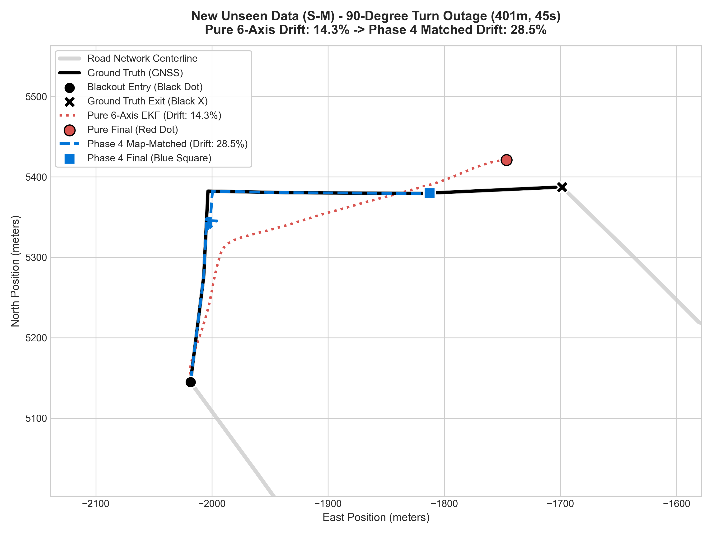
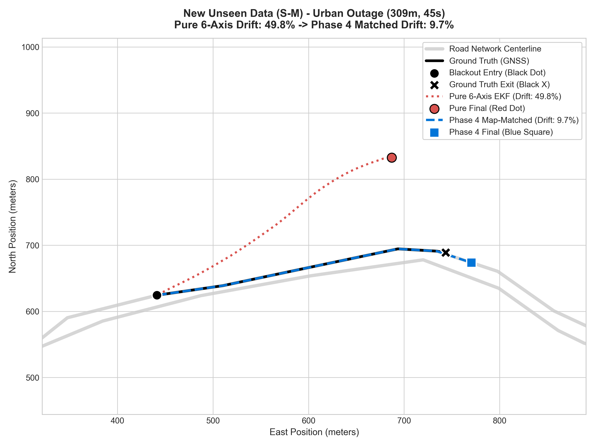
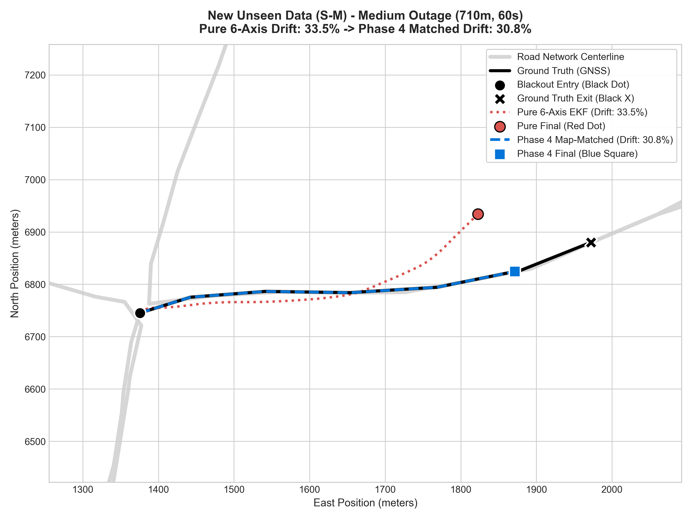

1. High-Resolution Trajectory Gallery (All Scenarios)
Unseen S-M Dataset: All-Tiers Comprehensive Comparison
Click image to expand to full resolution

2. Drift Distribution & Progression Charts
Unseen S-M Dataset Drift Distribution
Distribution across all 35 test runs (Phase 4 vs Pure 6-Axis)

4-Stage Architecture Progression
From Naive Baseline (>1000%) down to Phase 4 (9.91%)

3. Representative Real-Drive Scenarios
Long Outage Navigation (> 700m)
Sustained highway navigation without GNSS

90-Degree Highway Turn Outage
Abrupt 90-degree curve navigation during outage

Urban Curved Maneuver Outage
Dynamic turn-rate adaptation in urban corridors

Medium Highway Outage (200m–500m)
Standard tunnel & underpass blackout
